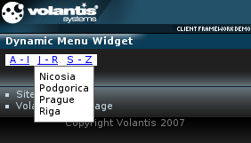

You can use the Dynamic Menu widget to include navigation on a page, without showing the menuitems initially. Menuitems are displayed when the user selects a menu. Moreover, you can use of transitions to show and hide the links in a visually appealing way.

This widget uses a standard XDIME 2 nl element to define a navigation list, and the Menu style property to render it dynamically.
<style type="text/css" media="handheld,all">
.main-menu {
mcs-effect-style: slide-top;
mcs-effect-duration: 1s;
mcs-menu-style: dynamic;
mcs-menu-orientation: horizontal;
mcs-toggle-event: click;
background-color: #fff;
text-decoration: none;
}
.main-menu:mcs-concealed {
mcs-effect-style: slide-top;
mcs-effect-duration: 1s;
}
label {
padding-left: 5px;
padding-right: 5px;
color: #000;
}
.menu a {
color: #000;
}
</style>
<nl class="main-menu">
<label/>
<li>
...
<nl class="widget_menu">
<label>J - R</label>
<li><a href="http://www.nicosia.org.cy">Nicosia</a></li>
<li><a href="http://www.podgorica.cg.yu">Podgorica</a></li>
<li><a href="http://www.prague-city.cz">Prague</a></li>
<li><a href="http://www.rcc.lv">Riga</a></li>
</nl>
</li>
</nl>The complete code for dynamicmenu.xdime follows.
<?xml version="1.0" encoding="UTF-8"?>
<html xmlns="http://www.w3.org/2002/06/xhtml2"
xmlns:mcs="http://www.volantis.com/xmlns/2006/01/xdime/mcs"
xmlns:template="http://www.volantis.com/xmlns/marlin-template"
xmlns:widget="http://www.volantis.com/xmlns/2006/05/widget">
<head>
<title>Dynamic Menu Widget</title>
<link rel="mcs:theme" href="/themes/main.mthm"/>
<link rel="mcs:layout" href="/layouts/main.mlyt"/>
<style type="text/css" media="handheld,all">
.main-menu {
mcs-effect-style: slide-top;
mcs-effect-duration: 1s;
mcs-menu-style: dynamic;
mcs-menu-orientation: horizontal;
mcs-toggle-event: click;
background-color: #fff;
text-decoration: none;
}
.main-menu:mcs-concealed {
mcs-effect-style: slide-top;
mcs-effect-duration: 1s;
}
label {
padding-left: 5px;
padding-right: 5px;
color: #000;
}
.menu a {
color: #000;
}
</style>
</head>
<body>
<template:apply href="templates/demo-main.xdtpl">
<template:binding name="title" value="Dynamic Menu Widget"/>
<template:binding name="content">
<template:complexValue>
<nl class="main-menu">
<label/>
<li>
<nl class="widget_menu">
<label>A - I</label>
<li><a href="http://www.ankara-bel.gov.tr">Ankara</a></li>
<li><a href="http://www.beograd.org.yu">Beograd</a></li>
<li><a href="http://www.berlin.de">Berlin</a></li>
<li><a href="http://www.bratislava.sk">Bratislava</a></li>
<li><a href="http://www.budapest.hu">Budapest</a></li>
<li><a href="http://www.pmb.ro">Bucharest</a></li>
<li><a href="http://www.krakow.pl">Cracow</a></li>
<li><a href="http://www.ljubljana.si">Ljubljana</a></li>
</nl>
</li>
<li>
<nl class="widget_menu">
<label>J - R</label>
<li><a href="http://www.nicosia.org.cy">Nicosia</a></li>
<li><a href="http://www.podgorica.cg.yu">Podgorica</a></li>
<li><a href="http://www.prague-city.cz">Prague</a></li>
<li><a href="http://www.rcc.lv">Riga</a></li>
</nl>
</li>
<li>
<nl class="widget_menu">
<label>S - Z</label>
<li><a href="http://www.sofia.bg">Sofia</a></li>
<li><a href="http://www.tallinn.ee">Tallinn</a></li>
<li><a href="http://www.tirana.gov.al">Tirana</a></li>
<li><a href="http://www.magnet.mt">Valletta</a></li>
<li><a href="http://www.wien.gv.at/">Vienna</a></li>
<li><a href="http://www.vilnius.lt">Vilnius</a></li>
<li><a href="http://www.zagreb.hr">Zagreb</a></li>
</nl>
</li>
</nl>
</template:complexValue>
</template:binding>
</template:apply>
</body>
</html>| Name | Purpose |
|---|---|
| a | Used to create an explicit link to another place in the same document or to another document. The current document is the source of the link and the value of the href attribute, defines the link target |
| label | Defines a label for a navigation list. |
| li | A list item in an ordered, unordered or navigation list. |
| nl | Defines a navigation list. The label element is required. |
| Core attributes | Attributes that are common to XDIME 2 elements. |
| Hypertext attributes | Attributes that define link targets. |